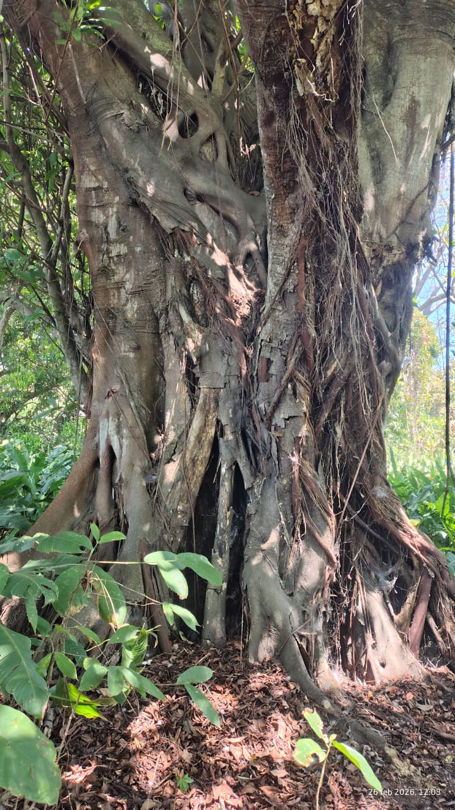

Sobre el proyecto
Este proyecto busca dar a conocer la importancia de los árboles en nuestra comunidad, su historia, sus beneficios ecológicos y su contribución al desarrollo sustentable. Al escanear un código QR, cualquier persona podrá acceder a la información de cada árbol.
Árboles registrados

Árbol de Amate
Árbol emblemático con raíces aéreas y gran importancia cultural.

Árbol de Mango
Árbol frutal adaptado al clima tropical de Chiapas.
Árbol de Jobo
Árbol joven importante para la fauna local.
Contacto
Proyecto escolar de desarrollo sustentable.